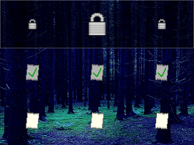

realicraft

Click here to view full image.
Collect all the pages in Slenderman's forest to win, sending checks along the way.
Each page is a location, and can't be reached until its part of the forest is unlocked.
The center is unlocked by default, and the unlocking the corners requires unlocking their adjacent sides.
Data is accurate for the latest APWorld version (0.3.1).
| Feature | Description |
|---|---|
| Locations | Depending on settings, between 8 and 64 locations. |
| Items | Four unique progression items (Forest Unlocks), one useful item (Free Scouting), one trap item (Death Trap), and one filler item. Free Scouting and Trap count depend on settings. |
| Goal | Check every location. |
| Traps | Contains a single Trap item, the Death Trap. |
| Protocols | Supports the Death Link protocol, with support for Trap Link and Scout Link being planned for future updates. |
| Options | Eight options to control location count, item rate, cooldown duration, Death Link, and the ability to kill-bind. |
| Solo Mode | A solo mode is present, but its development predates the development of the APWorld, and it thus does not match the final Archipelago mode. |
Click here to download the latest client release (0.3.1).
| Version | Patch notes | Download |
|---|---|---|
| 0.3.1 | The cooldown timer is no longer displayed if the cooldown is disabled. | Download |
| 0.3.0 | Adds support for Death Link, the Death Trap, a kill-bind button, and a cooldown between page collections. | Download |
| 0.2.0 | Initial release. | Download |
Click here to download the latest APWorld release (0.3.1).
| Version | Patch notes | Download |
|---|---|---|
| 0.3.1 | Makes option names more consistent and fixes several inaccurate option descriptions. | Download |
| 0.3.0 | Adds the Death Trap and five new options, which control trap rate, death duration, Death Link, page cooldown duration, and whether the kill-bind button is present. | Download |
| 0.2.0 | Initial release. | Download |